lnr-xxxxxxxxxxxxxxxx 같은 예시값을 넣었고, 실제 제공사(Liner·기상청·한국AI통신)에는 한 번도 연결하지 않았습니다. 그래서 「연결 테스트」에 성공한 뒤의 화면은 그림 대신 글로 설명합니다.빨간 상자와 숫자는 누를 곳과 차례입니다. 본문의 빨간 숫자와 그림의 숫자가 같습니다.
| 준비물 | 설명 |
|---|---|
| 컴퓨터 · 인터넷 | macOS · Linux · Windows. 처음 실행 때 Python과 패키지를 내려받습니다(Python을 따로 깔 필요 없음). |
| 브라우저 | Chrome · Edge · Safari 최신판. 화면은 1920×1080 데스크톱 기준입니다. |
| uv (설치 도구) | 아래 한 줄로 설치합니다. 설치 뒤 새 터미널 창을 엽니다. |
| Liner API 키 필수 | Liner 플랫폼(platform.liner.com)에서 받은 키. 대화·일정 생성·근거 검색·환율/금속 자료가 모두 이 키 하나로 돕니다. |
| 공공데이터포털 서비스 키 권장 | data.go.kr 마이페이지의 일반 인증키. 기상청 날씨 근거와 공공 API(5장)에 씁니다. |
| 한국AI통신 · Gemini 키 선택 | 문자·AI 전화를 시험할 때만(6장). |
| Docker 선택 | 뜻 검색용 Qdrant를 띄울 때만(7장). |
macOS · Linux — 터미널에서:
curl -LsSf https://astral.sh/uv/install.sh | sh
Windows — PowerShell에서:
powershell -ExecutionPolicy ByPass -c "irm https://astral.sh/uv/install.ps1 | iex"
설치가 끝나면 터미널을 닫고 새로 엽니다. uv --version 이 버전 번호를 보이면 됩니다.
uvx --from "git+https://github.com/sohnjangho/chronos#subdirectory=backend" chronos
admin).$ uvx --from "git+https://github.com/sohnjangho/chronos#subdirectory=backend" chronos … Python · 패키지 내려받기(처음 한 번, 약 30초) … 데이터 폴더: ~/.chronos 처음 실행입니다. 관리자 계정을 만듭니다. 관리자 아이디: judge 비밀번호(8자 이상, 입력이 보이지 않습니다): (입력해도 보이지 않음) 비밀번호 확인: (한 번 더) 관리자 계정 「judge」을(를) 만들었습니다. ChronOS 주소: http://127.0.0.1:8210 브라우저에서 위 주소를 열고 관리자 계정으로 로그인하세요. 처음에는 설정에서 Liner API 키 등을 넣어야 에이전트가 일합니다(docs/manual/ChronOS_설치_사용설명서.pdf). 끄려면 Ctrl+C 를 누르세요. INFO: Application startup complete.
시험 설치(2026-11-25)의 실제 출력입니다. 저장소 주소·데이터 폴더·포트만 위 명령과 기본값(~/.chronos, 8210)으로 바꿔 적었고, 내려받기 진행 줄은 줄였습니다. 설치 시작부터 아이디 질문까지 약 28초, 서버가 뜨기까지 약 8.5초 걸렸습니다.
~/.chronos(Windows는 %USERPROFILE%\.chronos)에 DB(chronos.db)와 비밀 열쇠(secret_key)가 생깁니다. 비밀 열쇠는 로그인 토큰과 저장한 API 키를 암호화합니다. 화면에는 찍지 않습니다.Ctrl+C. 자료는 데이터 폴더에 남습니다.--port 8300(포트) · --data-dir 폴더(데이터 위치) · --qdrant-url 주소(7장). 명령 끝에 붙입니다.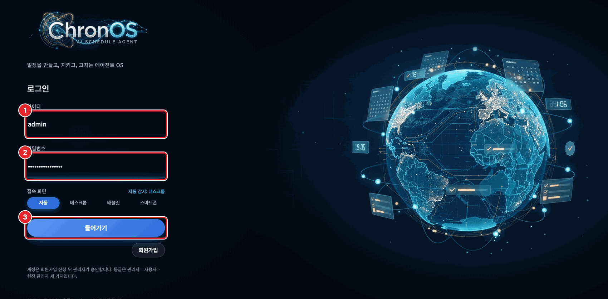
들어가면 빈 바탕화면이 나옵니다. 아직 일정도 연결도 없습니다. 아래 막대(Dock)의 톱니바퀴(설정)를 누릅니다.
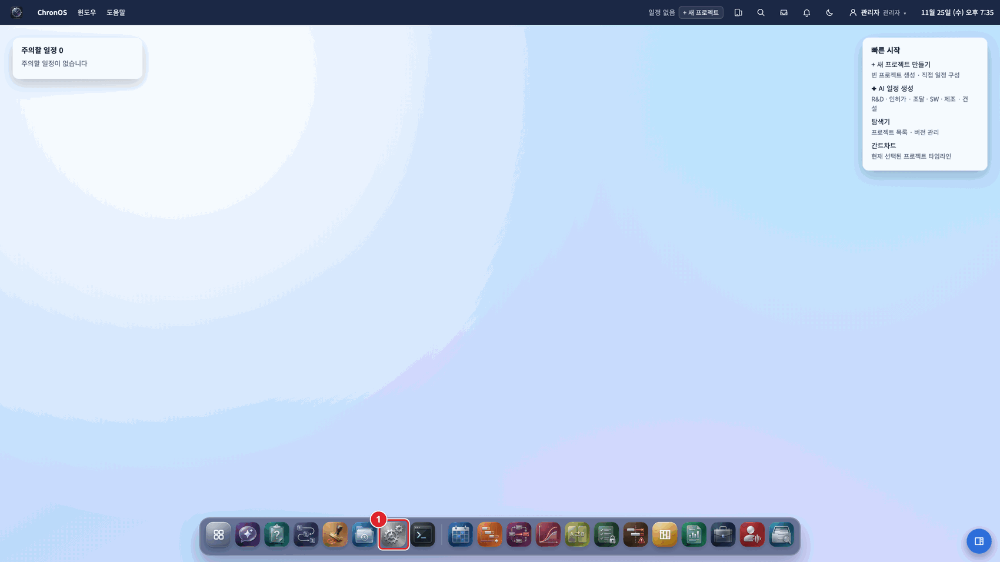
화면 속 표시 이름은 「관리자」입니다. 다른 사람은 로그인 화면의 [회원가입]으로 신청하고, 관리자가 설정 → 계정 (관리자·사용자)에서 승인합니다.
에이전트의 대화·일정 생성·근거 검색은 모두 Liner로 돕니다. 키는 서버에서 암호화해 저장하고, 화면에는 끝 4자리만 보입니다.
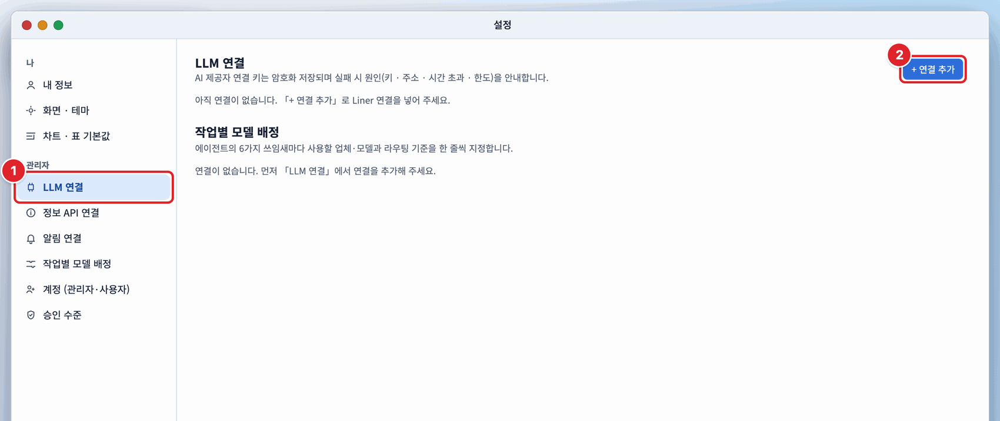
연결 추가는 「공급자 → 주소와 키 → 연결 테스트」 세 단계입니다.
Liner)과 URL(https://platform.liner.com/api/v1)이 저절로 채워집니다. 바꾸지 않습니다.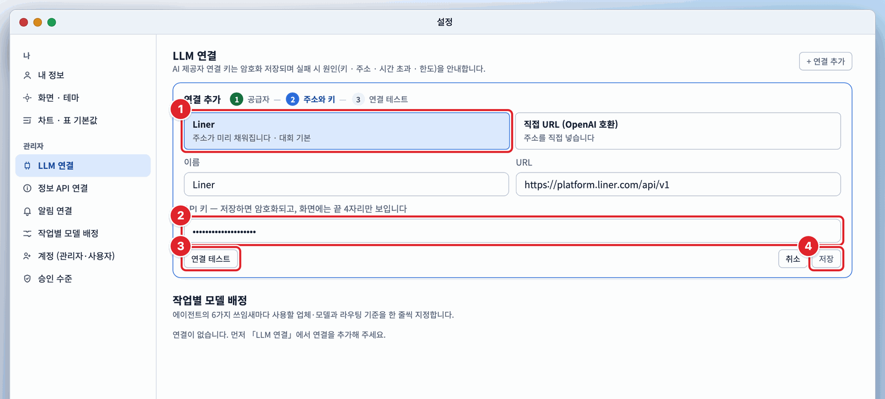
이 키 하나로 도는 것: Model API(대화·일정 생성), Search API(웹·논문 근거), MCP(법령·기업 근거), Premium Data(환율·금속 시세), Visualization API(보고서 그림). 따로 넣을 키가 없습니다.
저장한 연결의 [키 교체]·[URL 수정]·[삭제]는 카드 아래 단추로 합니다.
에이전트가 하는 일을 여섯 갈래로 나눠, 갈래마다 모델을 정합니다. 처음 값이 이미 들어 있어 그대로 두면 됩니다. 3장의 기본 연결을 저절로 씁니다.
openai/text-embedding-3-small을 Liner 연결로 부릅니다. 자료함의 뜻 검색에 쓰고, 7장(Qdrant)을 켤 때만 실제로 쓰입니다.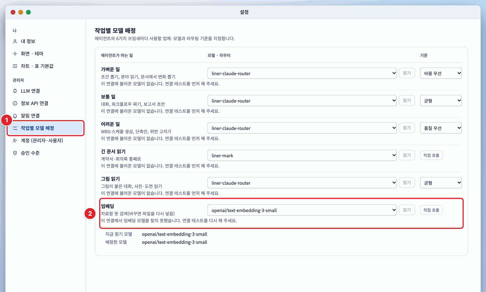
| 갈래 | 하는 일 | 처음 모델 | 기준 |
|---|---|---|---|
| 가벼운 일 | 조건 뽑기, 분야 읽기, 문서에서 변화 뽑기 | liner-claude-router | 비용 우선 |
| 보통 일 | 대화, 워크플로우 짜기, 보고서 초안 | liner-claude-router | 균형 |
| 어려운 일 | WBS·스케줄 생성, 단축안, 위반 고치기 | liner-claude-router | 품질 우선 |
| 긴 문서 읽기 | 계약서·회의록 통째로 | liner-mark | 직접 호출 |
| 그림 읽기 | 그림이 붙은 대화, 사진·도면 읽기 | liner-claude-router | 균형 |
| 임베딩 | 자료함 뜻 검색 | openai/text-embedding-3-small | 직접 호출 |
-router로 끝나는 라우터 모델에만 있습니다. 그 밖의 모델은 「직접 호출」입니다.에이전트가 근거로 붙이는 바깥 자료입니다. 모두 선택입니다. 없으면 그 근거만 빠지고 일정 생성·계산은 그대로 됩니다.
| 자료 | 어디서 · 무엇이 필요한가 | 넣는 곳 |
|---|---|---|
| 날씨 (기상청) | 공공데이터포털 키. 「기상청_지상(종관, ASOS) 일자료 조회서비스」와 「기상청_단기예보 조회서비스」를 활용 신청합니다. 지난 해들 그 달 통계·3일 예보를 근거로 씁니다. | 정보 API → 기상청(전용) |
| 환율 · 금속·원자재 | Liner Premium Data(환율 Xignite, 금속 The World Bank). Liner 키로 저절로 — 따로 넣을 것 없음. 부를 때 요금이 듭니다(검색 1,000건당 $2). | 없음 (분야별 켜고 끄기만) |
| 업체 · 규제·인허가 소식 | Liner Search · MCP. Liner 키로 저절로. | 없음 |
| 공휴일 | 2026~2028년 표가 앱에 들어 있습니다. 더 필요하면 아래 「특일 정보」. | 없음 |
| 공공 API 5종 | 공공데이터포털 키(서비스마다 활용 신청): 특일 정보(공휴일·대체공휴일) · 기상특보(주의보·경보) · 에어코리아 대기오염정보 · 건축인허가 정보(건축HUB) · 나라장터 입찰공고. | 정보 API → 범용 → 빠른 채움 |
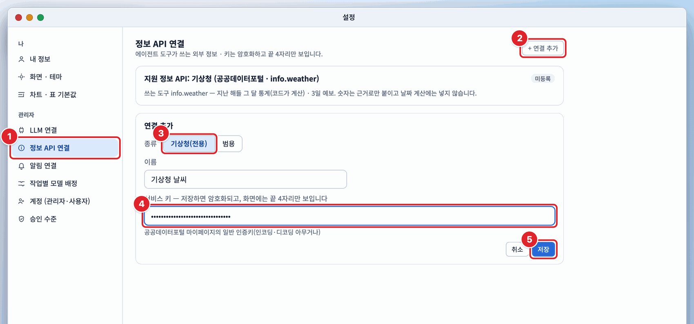
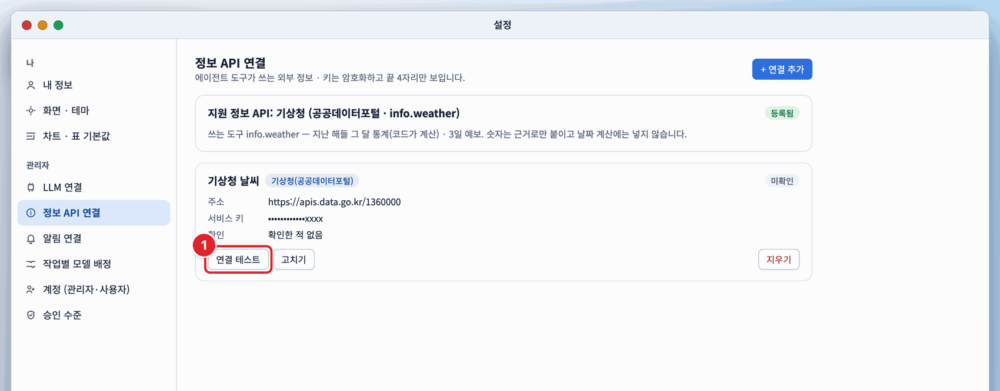
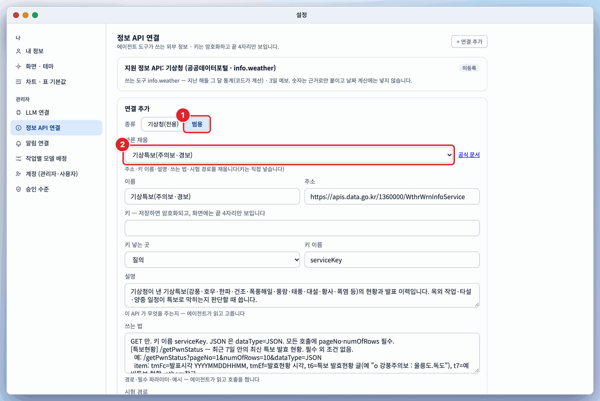
일정의 관리 포인트(크리티컬과 그 직전 작업)마다 어떤 바깥 자료를 찾을지 분야별로 정합니다. 처음 값 그대로 써도 됩니다.
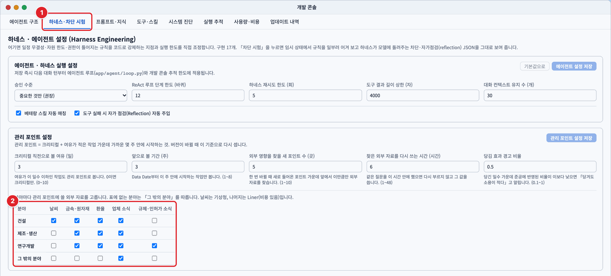
협력사에게 문자를 보내고 AI가 전화를 거는 기능입니다. 건너뛰어도 됩니다. 없으면 문자·전화만 나가지 않습니다. 제공사는 한국AI통신(문자·전화), 음성 모델은 구글 Gemini Live입니다.
https://api.koreaaitel.com)는 채워져 있습니다.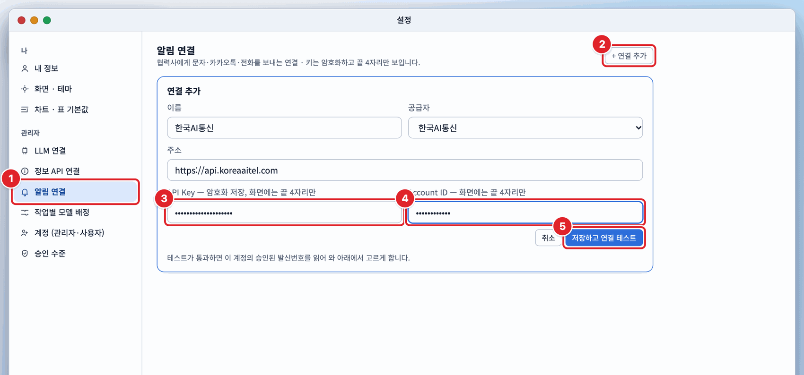
테스트에 성공하면 같은 카드에서 이어서 합니다(그림 없음 — 실제 키가 있어야 나오는 화면):
gemini-3.8-live) → 저장 → [음성 진단].voice 묶음)가 들어 있지 않아 AI 전화는 「준비 안 됨」으로 보입니다. 문자 연결과 나머지 기능은 그대로 됩니다.무료 등급 Gemini 키로 한 통화는 구글 제품 개선에 쓰일 수 있습니다. 실제 협력사와 통화하기 전에는 본인 번호로만 시험합니다.
자료함 파일을 뜻으로 찾는 기능입니다. 한 줄 설치는 이것을 꺼 두고 낱말 검색으로 돕니다. 시연에는 꺼진 채로 충분합니다.
켜려면 Docker로 Qdrant를 띄우고, 주소를 붙여 다시 실행합니다.
docker run -d --name chronos-qdrant -p 6333:6333 \ -v ~/.chronos/qdrant:/qdrant/storage qdrant/qdrant:v1.13.4
Ctrl+C로 끄고, 주소를 붙여 다시 실행:
uvx --from "git+https://github.com/sohnjangho/chronos#subdirectory=backend" chronos \ --qdrant-url http://127.0.0.1:6333
openai/text-embedding-3-small을 Liner 연결로 부릅니다. Liner 키 말고 따로 넣을 것은 없습니다.모든 연결이 제대로인지 한 화면에서 봅니다. 문제가 있는 것부터 위에 나옵니다.
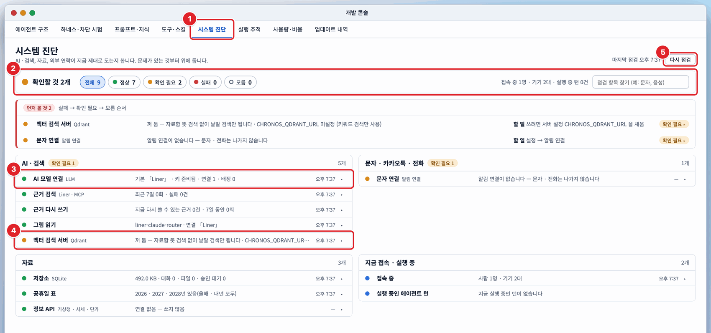
| 줄 | Liner만 넣었을 때 | 뜻 |
|---|---|---|
| AI 모델 연결 · 근거 검색 · 그림 읽기 | ● 정상 | 필수 설정 끝. |
| 벡터 검색 서버 | ● 확인 필요 | 꺼 둠(낱말 검색). 7장을 하면 정상. |
| 문자 연결 | ● 확인 필요 | 알림 연결 없음. 6장을 하면 정상. |
| 정보 API | ● 「연결 없음 — 쓰지 않음」 | 5장을 하면 연결 수와 상태가 나옵니다. |
| 저장소 · 공휴일 표 | ● 정상 | DB와 2026~2028 공휴일. |
위 오른쪽 [+ 새 프로젝트](또는 바탕화면 「빠른 시작」의 ✦ AI 일정 생성)를 누릅니다.
5층 사무동 신축 일정 짜 줘. 착공 2027년 3월 2일, 준공 2028년 2월 말
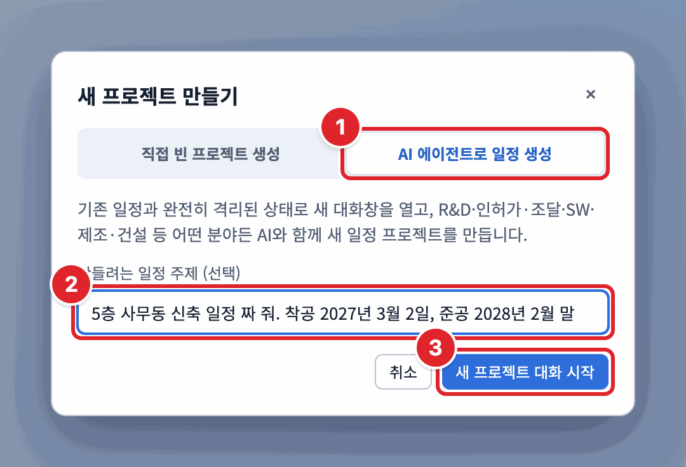
Dock의 에이전트 대화에서 바로 적어도 됩니다.
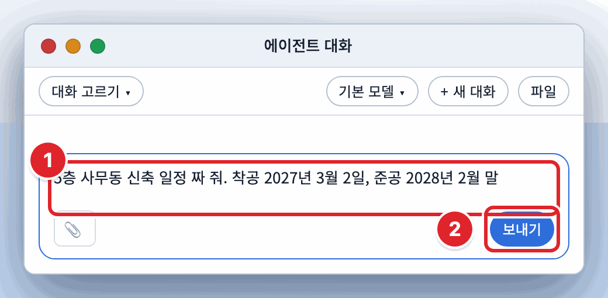
다른 프로그램이 8210을 쓰고 있습니다. 다른 포트로 띄우고, 브라우저 주소도 그 포트로 엽니다.
uvx --from "git+https://github.com/sohnjangho/chronos#subdirectory=backend" chronos --port 8300
uvx --from "git+https://github.com/sohnjangho/chronos#subdirectory=backend" chronos --data-dir ~/.chronos-new
| 위치 | 내용 |
|---|---|
~/.chronos (기본)Windows: %USERPROFILE%\.chronos | chronos.db(일정·대화·설정·암호화한 키) · secret_key(비밀 열쇠) · 올린 파일 |
| 바꾸기 | 명령 끝에 --data-dir 폴더, 또는 환경 변수 CHRONOS_DATA_DIR |
secret_key를 지키세요. 이 파일이 바뀌거나 없어지면 저장한 API 키를 풀 수 없습니다(키를 다시 넣어야 함). 옮길 때는 폴더째 옮깁니다. 이 폴더를 남에게 주지 않습니다.Ctrl+C로 끕니다.rm -rf ~/.chronos # macOS · Linux Remove-Item -Recurse -Force $HOME\.chronos # Windows PowerShell
| 증상 | 할 일 |
|---|---|
uv / uvx: command not found | uv 설치 뒤 터미널을 새로 엽니다. |
| 「터미널 입력을 받을 수 없습니다」 | 입력을 못 받는 곳에서 실행한 경우. --admin-id 아이디와 환경 변수 CHRONOS_ADMIN_PASSWORD로 관리자를 줍니다. |
| 「비밀번호는 8자 이상…」 | 8자 이상, 72바이트 이하로 넣습니다. 세 번 틀리면 멈추니 다시 실행합니다. |
| LLM 연결 테스트 실패 | 화면의 까닭(키 · 주소 · 시간 초과 · 한도)을 봅니다. URL은 https://platform.liner.com/api/v1 그대로 둡니다. |
| 에이전트가 답하지 않는다 | 개발 콘솔 → 시스템 진단에서 「AI 모델 연결」을 보고, 설정 → LLM 연결에서 [연결 테스트]를 다시 합니다. |
| 다른 컴퓨터에서 열고 싶다 | 기본은 이 컴퓨터에서만 열립니다(127.0.0.1). --host 0.0.0.0으로 열 수 있지만, 같은 망의 누구나 로그인 화면에 닿으니 시연용으로만 씁니다. |